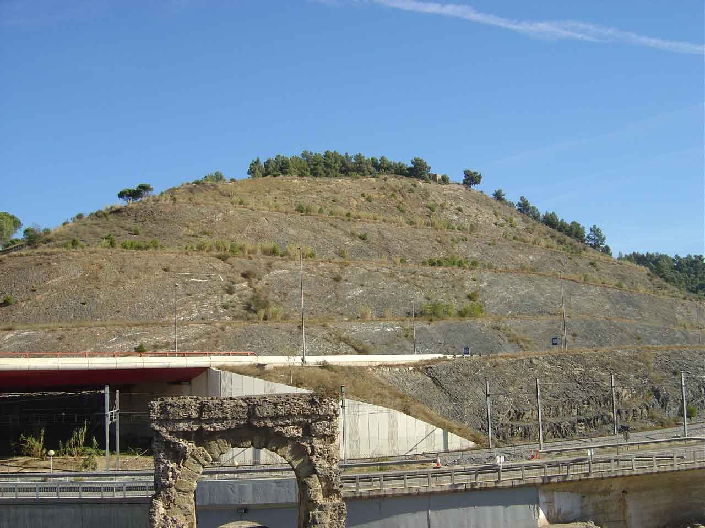
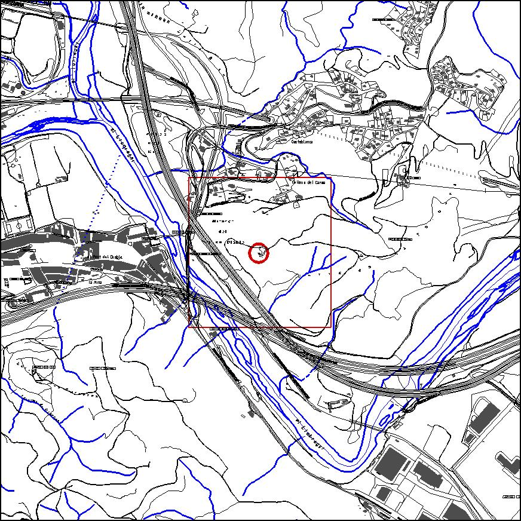

|  |  |
Nom de l’element: Turó del Telègraf
Clau d’identificació: D.01
Nucli o indret: Turó delTelègraf
UTM: X= 411.726, Y= 4.592.187
Règim del sòl: Sòl no urbanitzable.
Característiques:
Turó de 165 m s.n.m., on predomina un bosc de pi adult, tot i que a la part més meridional està tallat en forma de talussos degut a la construcció de l’autovia A-2. Jaciment arqueològic.
1.2. Estat de conservació:
1.3. Ús actual:
1.4. Accés:
Accés fàcil per pista forestal des del barri perifèric de la Costablanca o bé, des de Can Coromines.
Jaciment arqueològic.
3.1. Usos admesos:
Espais lliures, recreatiu cultural.
3.2. Condicions d’ordenació:
Segons Pla Especial a redactar.
3.3. Accés
Pista forestal des del barri perifèric de la Costablanca o bé, des de Can Coromines.
BCIL (Bé Cultural d’Interès Local)